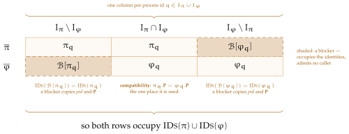

Definition 4.10 of Chapter 4 silences an environment on one and the same name closure in both worlds, so the claims open to it do not depend on which world it faces — and Proposition 4.16 and Theorem 4.20 use no relation between the two identity sets at all. What blocking buys is narrower: it makes that closure attainable as an exact silenced set, and so delivers the least restricted admissible class, as the discussion of Definition 4.10 in Chapter 4 records. A blocker occupies identities and nothing else. It admits no caller, \(\admits := \emptyset \), so the conjunct on line 2 of \(\opl {Guard}\) is false for every call and the caller receives \(\rej \). Its \(\op {Block}\) core is therefore never entered and its body is a formality. Leakage does not go through \(\opl {Guard}\), so a corrupt party’s \(\op {Leak}\) core is reachable; it returns \(\none \), all a machine with no state has to give. Both are cores, wrapped as Definition 1.2 requires of any standard functionality, and it is the wrapper that makes the first unreachable.
Blocker \(\Blk [\F ]\)
\(\PID := \F .\PID \), \(\Ps := \F .\Ps \), \(\admits := \emptyset \), \(\uses := \emptyset \), \(\pars := \none \)
\(\id .\op {Block}()\) from \(\id '\)
\(\id .\op {Leak}()\) from \(\id '\)
The blocker \(\Blk [\F ]\) is indexed by the functionality it stands in for, from which it copies the two fields that fix an identity set and nothing else. By construction \(\IDs (\Blk [\F ]) = \IDs (\F )\): it occupies precisely the identities of \(\F \), session and instance included, and nothing besides. Being unreachable, it stands in for \(\F \) as an occupant of those identities and in no other respect.
Write \(I_\pi := \{\F .\PID : \F \in \pi \}\) for the process ids a system uses. By Definition 1.2 each \(q \in I_\pi \) is carried by exactly one member, which we write \(\pi _q\), so \(\pi = \{\pi _q : q \in I_\pi \}\) and \(\IDs (\pi ) = \bigcup _{q \in I_\pi } \IDs (\pi _q)\). Blockers are indexed by ids and not by members, and the distinction matters: a process id may occur in both worlds carrying different code, in which case \(\varphi _q\) is not a member of \(\pi \) although \(\pi \) uses \(q\), and a blocker for such a \(q\) would put two machines at the same id.
Indexing by \(I_\varphi \setminus I_\pi \) instead keeps a blocker clear of what is already there. No member of \(\pi \) carries such a \(q\), hence no identity of \(\IDs (\pi )\) has \(q\) in its first component and \(\IDs (\varphi _q) \cap \IDs (\pi ) = \emptyset \). A blocker built from \(\varphi _q\) thus lands neither on an identity \(\pi \) already serves nor on the id of an existing member. Distinct ids give pairwise disjoint blockers, and all of them are new to \(\pi \), so the enlarged system again has distinct ids throughout.
The pair of systems being compared must in addition agree wherever they overlap.
Definition 6.1 (Compatibility). Systems \(\pi \) and \(\varphi \) are compatible if, whenever a process id occurs in both, the two functionalities sitting at it agree on their served parties and on whom they admit; the remaining fields — what they use, their parameters, and the code they run — may differ.
Compatibility is used at exactly one point: the ids common to both worlds. No blocker is added for such an id, so whatever it contributes must already agree on the two sides. Without it a shared id could serve different parties in \(\pi \) and in \(\varphi \), and the difference would go uncovered. Requiring \(\admits \) to agree as well is more than the argument needs, since only \(\Ps \) enters an identity set once the process id is fixed; but it costs nothing, a shared id being carried by the same functionality on both sides in every case we use.
Definition 6.2 (Blocker system, blocked systems). For systems \(\pi \) and \(\varphi \), the blocker system \(\opdef {Blockers}(\varphi \setminus \pi )\) is
and the blocked systems of the pair are
The argument of \(\opl {Blockers}\) is notation rather than an input: the construction reads the ids \(I_\varphi \setminus I_\pi \) and \(\varphi \)’s occupants there, not the member set the difference denotes — at a shared id carrying different code, \(\varphi _q \in \varphi \setminus \pi \) and yet no blocker is built. Each id in \(I_\varphi \setminus I_\pi \) is thus covered by the blocker of the functionality living there, with that functionality’s party set. Each world gains exactly the process ids the other has and it lacks, all blocking has to achieve. Ids common to both worlds get no blocker, which is where Definition 6.1 does its work.
Informally, Theorem 6.3 says blocking equalises the two worlds: each blocked system is again a system, and for a compatible pair the two occupy one and the same identity set, \(\IDs (\pi ) \cup \IDs (\varphi )\) — each world having gained exactly the process ids the other has and it lacks.
Theorem 6.3 (Equalisation). Let \(\pi \) and \(\varphi \) be systems. Then the blocked systems \(\overline {\pi }\) and \(\overline {\varphi }\) of Definition 6.2 are systems. If \(\pi \) and \(\varphi \) are moreover compatible, then
Proof. Two claims, and only the second needs compatibility. The first asks the three things Definition 1.2 asks of a system — finiteness, standardness, distinct process ids — of each blocked system, and gets them from the indexing: blockers are indexed by the ids the other world has and this one lacks, so they land on no existing member. The second compares the two identity sets index by index over \(I_\pi \cup I_\varphi \). At an id only one world uses, both sides contribute the same set, a blocker copying the two fields that fix an identity set. At a shared id no blocker is built, so the two contribute \(\IDs (\pi _q)\) and \(\IDs (\varphi _q)\) as they stand — and compatibility supplies the one thing the indexing does not, that the served party sets agree. That is the only place it is used. For the first claim, being a system asks three things of \(\overline {\pi }\): that it be finite, that its members be standard, and that they carry distinct process ids. Finiteness is immediate, the added members being indexed by \(I_\varphi \setminus I_\pi \subseteq I_\varphi \). Standardness is inherited: a blocker carries the wrappers Definition 1.2 asks of a standard functionality, \(\op {Block}\) as in Section 3.5 and \(\op {Leak}\) as in Section 3.2, and its process id is copied from a member of \(\varphi \), so its name is none of \(A\), \(Z\), \(C\). For distinctness, the members of \(\opl {Blockers}(\varphi \setminus \pi )\) are the \(\Blk [\varphi _q]\) with \(q \in I_\varphi \setminus I_\pi \), and \(\Blk [\varphi _q].\PID = \varphi _q.\PID = q\). These ids are pairwise distinct and none lies in \(I_\pi \), so the members of \(\overline {\pi }\) carry distinct process ids and \(I_{\overline {\pi }} = I_\pi \cup I_\varphi \). The same argument applies to \(\overline {\varphi }\).
For the second, \(\IDs (\Blk [\F ]) = \IDs (\F )\) holds for every \(\F \), since a blocker copies the two fields that determine an identity set. Hence
and both unions are indexed by \(I_\pi \cup I_\varphi \). Compare them at each \(q\) in that set. If \(q \in I_\pi \setminus I_\varphi \) then both contribute \(\IDs (\pi _q)\), and if \(q \in I_\varphi \setminus I_\pi \) then both contribute \(\IDs (\varphi _q)\). If \(q\) lies in both, the first contributes \(\IDs (\pi _q)\) and the second \(\IDs (\varphi _q)\). Both are carried at the index \(q\), so \(\pi _q.\PID = \varphi _q.\PID = q\) outright, and compatibility supplies the one thing that does not follow from the indexing, \(\pi _q.\Ps = \varphi _q.\Ps \). An identity set is fixed by those two fields, so \(\IDs (\pi _q) = \IDs (\varphi _q)\). The two unions therefore agree term by term, and each equals
The second claim is a table. A process id falls in one of three places, and the theorem is what sits at each:

Figure 3: Where a process id can fall, and what blocking does at each place. The three columns are the three cases of the second claim of Theorem 6.3.
In the outer columns the world that lacks the id gains a blocker, and a blocker occupies exactly the identities of the functionality it stands in for, having copied the only two fields that fix an identity set. So the two rows contribute the same identities there — although one contributes a working functionality and the other a machine that answers nothing, which is the point of shading them differently. Equalising identity sets is all blocking has to achieve, and it had better be all it achieves: a blocker that answered anything would change what an environment could learn, and the comparison it was built to enable would be worthless.
The middle column is where the hypothesis lives. No blocker is built for a shared id, so the two rows contribute \(\IDs (\pi _q)\) and \(\IDs (\varphi _q)\) as they stand, and nothing in the indexing makes those equal — both are carried at \(q\), so the process ids agree outright, but the served party sets need not. Compatibility is exactly the assumption that they do, and this column is the only place it is used. Read the other way, it is also what the assumption costs: a shared id serving different parties in the two worlds is a difference blocking cannot cover, because the one device it has — adding an occupant — is unavailable where an occupant is already present.
Only the second claim needs any of this. That \(\overline {\pi }\) and \(\overline {\varphi }\) are systems at all asks nothing of compatibility, which is why the theorem states the two separately and why Proposition 6.4 below may lean on the first alone.
Blocking enlarges a system, and enlarging a system is one of the two ways Definition 1.3 could come undone.
Proof. \(\overline {\pi }\) is a system by the first claim of Theorem 6.3, which asks no compatibility, so \(\WF (\overline {\pi })\) is a legal question. We argue for \(\overline {\pi }\); the argument for \(\overline {\varphi }\) is the same with \(\WF (\varphi )\) in place of \(\WF (\pi )\). Take \(\F \in \overline {\pi }^{+}\) and \((\F ',R) \in \F .\uses \).
If \(\F \) is one of the added blockers there is nothing to check: a blocker has \(\uses = \emptyset \) by construction, so it contributes no entry. Otherwise \(\F \) lies in \(\pi ^{+}\), and \(\WF (\pi )\) supplies a witness \(\G \in \pi ^{+}\) for that entry. That witness is still present, since \(\pi ^{+} \subseteq \overline {\pi }^{+}\), and blocking alters no member’s fields, so \(\G .F\), \(\G .s\) and everything \(R\) reads are what they were. The three conditions therefore still hold of the same \(\G \).
The argument uses nothing about blockers beyond their empty \(\uses \): enlarging a system to another system preserves well-formedness whenever the members added carry no entries of their own, because a witness once present is never removed and the fields it is judged on never change. Neither compatibility nor Theorem 6.3’s second claim is used. □
Remark 6.5 (Tight realizations). The closure keeps the environment’s own claims off the used names; hosting is the one route around it. An admissible environment may host a machine at an unoccupied identity of a used name — an invented second instance of a caller, say — and a hosted machine is a full interface, claiming its own identity through its own silencer rather than through \(\pars \) (Definition 4.13). Against a pair whose members admit that name, the two worlds can then answer differently at an identity only one of them occupies, and no condition on the class can refuse the intruder without refusing absorption: the absorbed environment of Definition 4.15 hosts machines of exactly the same shape — outside occupants at admitted names — and differs from the intruder only in the code it runs, which admissibility rightly does not read. Part of the repair belongs to the realization. Call a system tight at a subset \(I\) of its members if every member outside \(I\) admits whole process ids occupied by the system, rather than names, and serves only parties each of its admitted callers serves — with \(\serves \) this makes a private member’s party set exactly its callers’, which is what a private subroutine is. Tightness closes the host route to the members outside \(I\): an unoccupied process id lies outside every pinned \(\admits \) and fails line 2, and the party condition makes every identity a pinned caller could speak from occupied, where Definition 4.10 forbids hosting; so a call an intruder addresses to a member outside \(I\) is refused, on the ideal side too, by the blocker’s empty \(\admits \) or by \(\opl {Exec}\) finding no occupant. What tightness does not close is the route to a member of \(I\) itself: an interface member that admits a bare used name — the local pattern of Chapter 1 — is reachable by a hosted fake instance exactly as a private member would be, and tightness constrains no member of \(I\). Pinning those too, or admitting only \(\Zpid \cup \Apid \) where the environment reaches them directly, would close it; we do not pursue a general sufficient condition here. Tightness is a hygiene condition in the spirit of a subroutine-respecting protocol, necessary for the private members not to leak; a full characterization of when comparisons against blocked pairs are faithful we leave open.